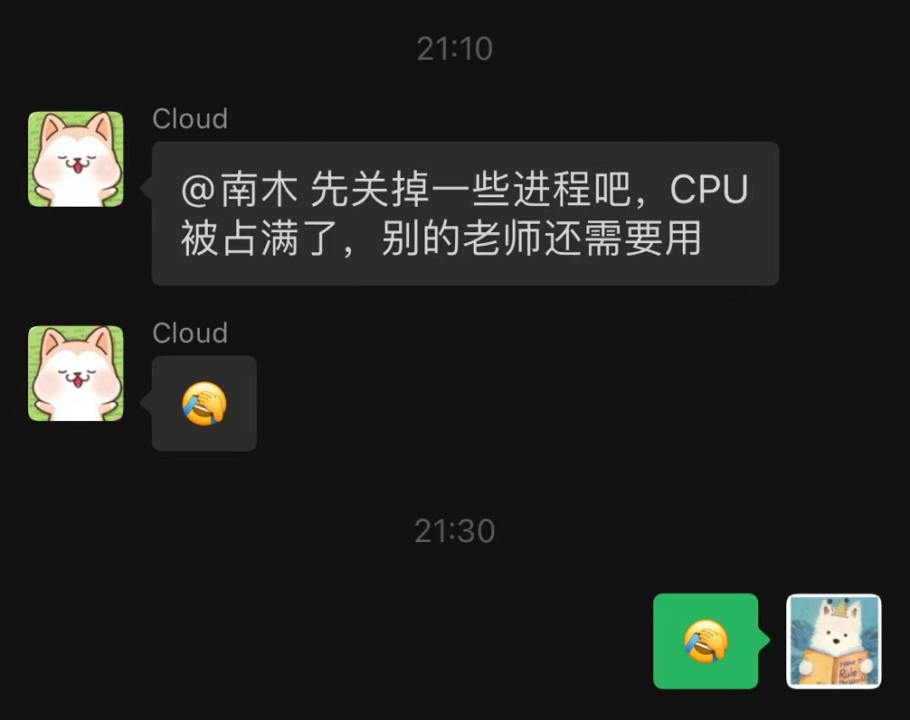

Invariant Rule Baseline 复现
项目背景
这是清华大学团队的一个项目，和工业互联网的网络异常检测有关。我和另一位网络工程专业的大二本科生一同参与了这个项目，通过线上会议的形式和清华老师进行交流。
我们的主要任务是复现相关论文的检测方法，作为论文的 baseline 之一。
具体复现的论文是 NDSS 2019 的一篇论文：《A Systematic Framework to Generate Invariants for Anomaly Detection in Industrial Control Systems》
这篇论文提出了一种基于数据驱动的方法，用于生成工业控制系统的不变量，以检测异常的网络状态。论文已经有官方实现：github.com/cfeng783/NDSS19_InvariantRuleAD
我们的任务是复现这个方法，并在指定格式的数据集和指定的实验设置下进行测试（和清华大学团队已经实现过的 baseline 保持一致）。
主要问题
代码运行效率低下
在我们着手开始复现这个项目之前，团队应该已经有人简单地在数据集上尝试了官方实现，但是因为效率问题没有得到较好的结果，所以这个工作落到了我们手里。
老师在实验开始之前就提醒我们，官方实现在我们指定的数据集和实验设置上效率不佳，挖掘规则所花费的时间太久。我们需要尝试提高代码的运行效率，比如查找 CFP-growth++ 算法的高效实现方式，或者分布式算法；如果没有，考虑调整参数，或者限制搜索树高度和搜索空间的大小等。
不过，这最后被发现是一个简单的数据类型问题，而不是算法本身的效率问题，这一点之后会提到。
代码逻辑不适配所需的实验设置
官方实现的逻辑如下：
- 输入单个训练集和单个测试集
- 按照训练集的数据特征进行一定的变换，并将这些变换同步到测试集上
- 在训练集上挖掘规则集
- 在测试集上评估规则的有效性
我们的实验要求划分十个训练集和大量的不同变化后的测试集，每个训练集挖掘规则后，需要在所有的测试集上分别评估规则的有效性。
如果按照原逻辑，我们需要循环运行成百上千次代码，对单个训练集进行大量的、重复的规则挖掘。在单次规则挖掘需要花费数小时的情况下，这样的效率是难以忍受的。
详细情况与解决方案
运行效率：数据类型问题
这是整个复现过程中最关键的问题，它解决起来并不麻烦，但是我们花费了很长时间才发现问题的存在。
我们在本地使用 csv 格式的 SWaT 和 WADI 数据集，可以复现论文结果。在 WADI 数据集上规则挖掘效率大约在三到五小时一个训练集，这个时间是可以接受的，并没有发现清华老师提到的效率问题；但是当我们使用服务器上的清华团队提供的数据集时，效率问题就出现了。
清华团队提供的同样是 SWaT 和 WADI 数据集，是用 numpy 的 npy 格式存储的。按照老师的说明，只是对原数据集进行了一些简单的切片，并没有更改数据原始值。但是我们发现，使用这些数据集，规则挖掘的效率会大幅下降，一个训练集的挖掘会长达十几个小时——事实上时间只会更长，因为我们并没有等待规则挖掘结束，而是手动终止了实验。
这完全不符合我们的预期，因为无论是 csv 还是 npy 格式，都是读入之后转为 pandas 的 DataFrame 进行处理，不应该产生效率上的差别。
经过一段时间的调试，我发现问题出在数据的类型上。
在原始的数据集上，WADI 中有一些特征是离散的执行器状态，一些是连续的传感器数据。在 csv 格式的原始数据集中，这些特征就表现为数据的类型：离散特征是 int 类型，连续特征是 float 类型。而在经过处理后的 npy 格式的数据集中，所有的特征都被标示为 float 类型，即使它本身是一个离散的执行器状态。
在挖掘规则时，代码正是根据特征的类型来判断特征是连续的还是离散的，决定采用什么样的方法来处理这个特征：
for entry in training_data:
if training_data[entry].dtypes == np.float64:
max_value = training_data[entry].max()
min_value = training_data[entry].min()
if max_value != min_value:
training_data[str(entry) + '_update'] = training_data[entry].shift(-1) - training_data[entry]
cont_vars.append(str(entry) + '_update')
这段代码会将连续特征转换为差分特征，加入到 cont_vars 中。后续将会对 cont_vars 中的特征进行高斯聚类，然后进行规则挖掘。
数据类型的错误，导致了代码将所有的特征都识别为连续特征，加入了大量的 cont_vars，挖掘规则时的计算量大幅增加。
定位出问题之后，解决的方法很简单。我写了一个简单的脚本，在原数据集上记录所有离散特征列，然后存储为 WADI_categorical_column 和 SWaT_categorical_column 两个文件，挖掘规则前读取对应文件，将其中的特征转换为 int64 类型即可。
if flag == '1':
categorical_column = pickle.load(open("./WADI_categorical_column", "rb"))
else:
categorical_column = pickle.load(open("./SWaT_categorical_column", "rb"))
'fix type issue'
for entry in training_data:
if entry in categorical_column:
training_data[entry] = training_data[entry].astype('int64')
逻辑不适配：引入中间结果，使用并行加速
中间结果
官方实现的代码逻辑中，测试集需要按照训练集的特征进行一定的变换才能进行检验。这个过程发生在规则挖掘之前，这使得单次规则挖掘只能对一个测试集进行评估。
注意到，这里的影响是单向的，即训练集的特征会影响测试集需要进行的变换；但无论测试集的特征不影响训练集挖掘规则。基于这个观察，我们可以引入中间结果保存所需的变换，将训练集的挖掘规则和测试集的变换逻辑分开。这样可以避免大量的重复训练，并为评估规则的并行加速提供了可能性。
思路简单清晰，但是实现起来并不十分容易，原代码中进行了大量的数据处理，包括高斯聚类生成的模型，这些结果都需要在训练集和测试集之间传递。
我对代码进行逐行的检查和修改，将原代码中的数据处理逻辑分离出来，使得多个测试集可以共享这些数据处理的结果。最终，单个训练集产生的中间变量文件和规则文件总和多达十余个。
并行加速
在分离规则挖掘和规则评估后，我们只需要进行十次规则挖掘，然后对所有的测试集进行评估即可。我写了一个简单的 shell 脚本，使这两个过程都可以并行进行。
不过，后续发现，由于服务器资源有限，无法对所有规则同时进行评估。否则，因为同时创建了太多线程，CPU 占用会达到惊人的 99%，导致服务器上其他老师的实验无法正常进行。
所以，最后我放弃了一键式训练 + 评估的 shell 脚本，转而编写了一个仅并行训练的脚本，评估脚本则是一次运行一组测试集，根据当前的 CPU 负载情况手动进行调度——也许技术力更强些，可以编写一个自动调度的脚本。不过当前的脚本能 work，并且项目也不需要长期维护，我就没有继续深入研究。
总结
这是我第一次参与科研项目，解决的问题也比较简单。不过，我认为自己至少有以下三点收获。
旧技术的运用
在这个项目中，我实际用到了一些之前学过的技术或者积累的经验。
使用 ssh 登录服务器，并用 VScode 的 Remote-ssh 在 Linux 服务器上编写代码；使用一些简单的命令行工具在服务器上进行操作，比如 htop 监控 CPU 占用、nohup 创建后台进程以及 shell 脚本的编写和运行等；当然，还有天天熬夜打算法竞赛积累的一些 debug 经验和代码能力，这使我能比较快速地理解代码逻辑，定位到数据类型的问题。
我对 github copilot 的 prompt 技术更是有了更深的理解。如何合理地 prompt，如何利用 copilot 完成简单的代码编写，这些确实是提高效率的关键技能。
实际用到自己曾经学习过的技术是一种很好的体验。只有看到这些技术在实际项目中发挥作用，才能理解它们的价值所在。
新技术的学习
此前，我并没有接触过 python。在这个项目中，我学习了一些 python 的基础语法，了解了一些 pandas 和 numpy 的基本操作。最重要的是了解了 python 的包管理工具 pip 和虚拟环境 venv，搭建一个独立的 python 环境对我来说不再是难事。
分离代码逻辑，使用 shell 脚本进行并行加速，这是我第一次接触和使用这种技术。我认为这是很有代表性的优化方法，简单并且有效，完全可以推广到其他项目中。
信心的建立
独立完成一项最开始看来十分艰巨的任务，使我对自己的能力有了更多的信心。
我现在明白，计算机领域的科研工作并不是遥不可及的。这里并没有什么魔法，无非是更高级的算法和尚未接触的工具罢了，只要有充足的时间和信心，我认为自己可以解决大多数问题。从一些简单的事情出发，逐渐积累经验，我也可以做出一些有意义的工作。
插曲
接下来的内容会比较随意，主要是记录项目中的一些小插曲，以及自己的一些小收获。
并行加速导致服务器负载过高
这一点上面已经提到，最开始的并行评估代码创建了太多的线程，导致服务器负载过高，其他老师的实验无法正常进行。

我在 htop 上看到的 CPU 占用情况：

于是我杀掉了大部分的进程，改为手动调度的评估脚本。
我最开始拿到这台服务器的 ssh 登录权限的时候，兴奋地查看了一下服务器的配置，有 112 个双线程 CPU，总共 224 个线程；有八张 4090 24G 显卡，总计 300 GB 以上的内存和接近 200 GB 的显存。
我对计算资源并没有太多的概念，只知道这个配置已经超过了我能想象的范围。但是即便是这样的配置，也无法承受我使用 shell 脚本创建的并行线程。
我现在充分理解机器学习/深度学习的工作中，计算资源到底有多么重要了。
linux 权限管理
这件事发生在整个项目的后期。
我完成服务器上的训练后，老师由于权限问题没法直接访问我的结果文件。我尝试修改了沿路的权限，但是一时半会没有解决问题。于是决定直接选择最小白的方法：将文件下载到本地，打包后用微信发一个 zip 包。这样，老师就可以直接下载文件了。
这一套方案虽然有点丑陋，但是确实有效。直到有一天，完成了所有实验之后，我想要像往常一样直接通过 VScode 的 Remote-ssh 插件下载实验结果所在的文件夹，结果插件提示文件夹下文件数量过多，无法下载。
于是我一拍脑袋，和老师说明了一下情况，然后直接把从根目录下到实验结果文件夹的权限更改为 777，并通知老师查看文件夹。
这时候，老师指出：
你先在服务器上压缩打包啊

丢脸归丢脸，事情是解决了。
但是很快，我和另一位同学发现，我们没法连接服务器了。具体地来说，我们使用的 ssh key 失效了，需要提供账户的密码才能连接。
我们一度以为是服务器出了问题；或者是因为我们已经完成了这个项目，老师回收了服务器的权限（后者被我们排除了，因为我们还有另一个 baseline 正在复现中，同样需要服务器上的数据）。
联系老师之后开始排查问题，我们先尝试生成了一个新密钥，重新绑定了服务器的 ssh key，但是仍然无法连接。
这时候，我想起来我设置的 777 权限，Google 一下，果然存在这个问题，ssh 这类服务会检查文件夹的权限，如果权限过高，会限制某些功能，比如 ssh key 验证。

好吧，至少下一次，我不会随便设置 777 权限了 😂
代码的可维护性
这是一个短期的项目，我们只需要得到结果，然后代码就可以丢弃了。我并没有花费太多的时间在代码的可维护性上。
但是，就是在这么短的项目周期里，混乱的代码还是让我吃到了苦头。
我在最开始的代码中大量使用硬编码的路径，固定了数据集的路径、中间结果的路径等等。这导致我在后期需要调整实验设置时痛苦万分，常常出现更改一个设置，就需要更改一大堆路径的情况。
其次是参数的设置混乱，我在所有的脚本中都使用了最基础的参数读入方式，在 shell 脚本中没有使用 getopts，python 脚本中没有使用 argparse，每次调整参数时，都需要打开对应的脚本，一个一个找到参数的位置，确定含义然后修改。
期间，还因为这个问题导致了一次错误的实验结果。应该评估一个训练集的规则集在所有测试集上的效果，但是因为参数写反了，评估了所有训练集的规则集在一个测试集上的效果。
项目再小，也要保证最基本的代码质量。这是我在这个项目中的一个教训。